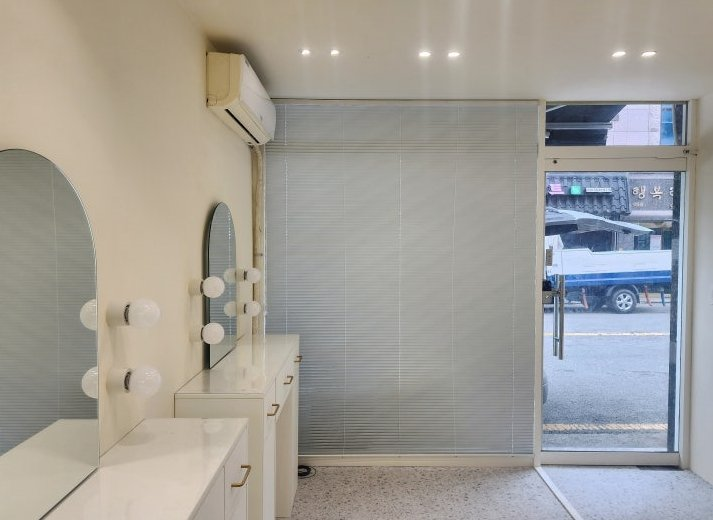
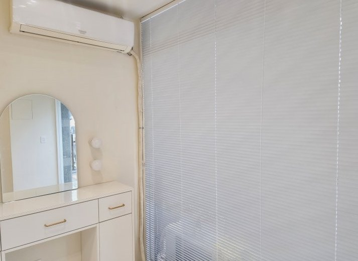
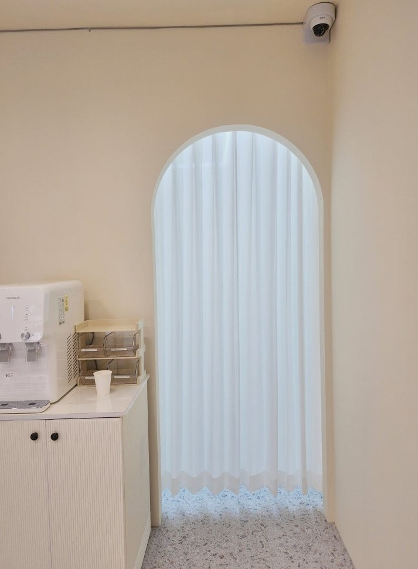

2026년 7월 19일 시공
구미 네일샵
알루미늄 블라인드·헤비쉬폰 커튼 시공후기

구미의 도로변 네일샵입니다.
크림톤 벽에 아치 거울, 테라조 바닥까지 공들여 꾸민 매장이었습니다.
그런데 사장님의 고민은 분명했습니다.
전면이 통유리라, 시술받는 손님이 길에서 훤히 들여다보인다는 것.
오후에는 햇빛이 그대로 들어와 눈이 부시기도 했고요.
시선과 눈부심은 확실히 가리고 싶은데,
애써 만든 밝고 화사한 분위기는 죽이고 싶지 않다.
매장 창은 이 두 가지를 동시에 잡는 게 핵심입니다.
그래서 전면창에는 화이트 알루미늄 블라인드를 골랐습니다.
알루미늄은 얇은 날개의 각도만 살짝 돌리면, 빛은 그대로 들이면서 바깥 시선만 끊어줍니다.
손님이 앉는 눈높이에 맞춰 각도를 눕히면,
매장은 여전히 환한데 밖에서는 안이 보이지 않습니다.

네일샵은 물과 화장품, 손 소독제를 늘 쓰는 공간입니다.
원단 제품은 시간이 지나면 관리가 부담이지만,
알루미늄은 물기가 튀어도 슬랫만 닦으면 새것처럼 유지됩니다.
관리 면에서도 네일샵에는 알루미늄이 맞습니다.
넓은 전면 통창은 한 장으로 덮으면 조작이 무겁고 라인도 흐트러집니다.
그래서 창을 세 폭으로 나눠 시공했습니다.
필요한 구간만 따로 조절되니 훨씬 가볍고,
닫아두면 전면이 하나의 깔끔한 벽처럼 정돈됩니다.

이 매장에서 제일 마음에 들었던 곳은 안쪽으로 이어지는 아치 통로였습니다.
사장님은 여기에 문을 달아야 하나 고민하고 계셨는데, 저희는 문을 달지 말자고 말씀드렸습니다.
문을 달면 애써 만든 곡선이 직선 문틀에 잘려 나가고, 통로도 좁아 보입니다.
대신 헤비쉬폰 커튼을 두배나비주름으로 넉넉히 잡아 걸었습니다.
헤비쉬폰은 살짝 도톰한 쉬폰이라 쳐 둬도 형태가 단정하고,
주름이 촘촘히 서서 곡선 아치와 세로 라인이 만나 오히려 더 우아해졌습니다.
빛은 은은하게 통과해 아치 너머가 환하게 비칩니다.
가리긴 가리는데, 답답하지 않게 가려지는 겁니다.
시공을 마치고 보니 아치의 곡선과 커튼의 세로 주름이 원래부터 세트였던 것처럼 어울렸습니다.
사장님도 "문 안 달길 잘했네요" 하고 웃으셨습니다.
전면창은 알루미늄 블라인드, 아치 통로는 헤비쉬폰 커튼.
창을 가리면서도 매장은 여전히 환한, 딱 원하시던 밸런스가 나온 시공이었습니다.